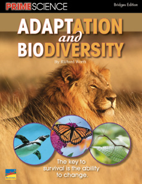
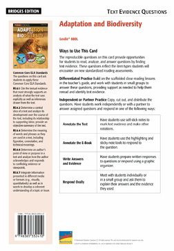

Informational Text
Earth’s Biosphere
Adaptation and Biodiversity
Lexile® 880L
Related Resources
Text-Dependent Comprehension
Scaffolded Reading and Comprehension
Other Titles in This Topic Set
Online Resources
Essential Question
Supporting Questions
Enduring Understanding
Next Generation Science Objectives
STEM Connections
ELA Strategies and Skills
Text-Dependent Comprehension Strategies
Vocabulary Strategies
Writing to Sources (p. 12)
What Makes This Text Complex? | |
Purpose and Levels ➌ | The purpose of the text is to explore the adaptations that allow living organisms to survive. (pp. 3–6, 9)* |
Structure ➌ | The book includes descriptive, cause and effect, explanatory, and procedural text, as well as many sidebars, charts, and rich graphics. (p. 7)* |
Language Conventionality ➋ | • Text contains simple and complex sentence structures. • Domain-specific, otherwise unfamiliar terms are supported by direct definitions, context clues, and descriptions. (p. 8)* |
Knowledge Demands ➌ | The text assumes some prior knowledge of Life Science and Physical Science concepts. |
Qualitative text complexity dimensions from the CCSS are scored on the following scale:
➊—Low; ➋—Middle Low; ➌—Middle High; ➍—High
*Citations refer to pages within this teacher’s guide that address the specific text complexity.
First Read
Preview and Make Predictions SL.6.1b, SL.6.1c
Invite students to flip through the book and view photos, or project the whiteboard version of the text and preview the pages together.
Have students turn to the Table of Contents and read the chapter heads and supporting questions for each chapter.
Invite students to read the book description and the About the Author blurb on the back cover.
Ask: How do these features help you figure out what you’ll learn about in this book?
Collaborative Whole-Group Discussion SL.6.1b, SL.6.1c
Ask: What do you know about biodiversity? What role do you think biodiversity has in supporting the survival of our species?
If your students need more support, use the Scaffolded Preview provided for each section.
Have students turn to pages 4–5, or display the pages on the whiteboard. Read aloud the text, or listen and follow along with the talking e-book in the whiteboard edition.
Invite students to quickly generate a list of questions they have about adaptation and biodiversity.
Choose the reading option that best meets the needs of your students. See Ways to Read the Text.
Read Chapter 1 RI.6.2, RST.6.2, SL.6.1
If necessary, use the Scaffolded Preview and Cognates for Essential Vocabulary to help students access the text.
Read aloud the supporting question on page 6: How have animals become adapted to survive in their habitats?
Set a purpose.
Say: As you read this chapter, you will use a strategy called Double Entry Journal to help you understand how animals adapt to survive in their habitats.
Display the Double Entry Journal sample shown below.
Say: The Double Entry Journal process is a form of note taking. As you read the book, write key concepts from the text that you think are important. Across from each concept, in the right column, write why the concept is important, or what the author’s purpose was in including it.
Read aloud page 6 and model how you jot key information using the Double Entry Journal format.
Have students create a Double Entry Journal on notebook paper, or distribute copies of BLM 1.
Instruct students to read page 7 and record key concepts in the second column and why each concept is important in the third column. Circulate to monitor and provide help as needed. Remind students that they are taking notes as they read the chapter so they can identify and summarize the most important ideas when they have finished. Explain that they may use whatever concise note-taking method helps them capture the information easily and accurately (single words, phrases, abbreviations, symbols, drawings, etc.).
Summarize Key Concepts: Think and Write Together
Invite students to share their Double Entry Journals. What central ideas and key concepts did they list in the second column? Do the notes they recorded in the third column provide the details needed to understand these central ideas/concepts? Provide time for students to share and discuss their chapter summaries with the class.
Use the Sentence Frames to Support Collaborative Conversation for English learners.
As a group, construct a two- to three-sentence written summary of the key ideas in the chapter. If students need more support to summarize the text, explicitly model strategies for summarizing.
Model Summarizing
Say: When we summarize, we include only the most important information in a text. We look for the central ideas. We don’t include all of the details. Let’s summarize a section of this chapter together.
Reread the “Aquatic Habitats” section on pages 10–12.
Say: There is a lot of information in this section. I ask myself, “What is the central idea this writer wants me to understand about aquatic habitats?”
Allow responses. Support students to recognize that the author wants readers to understand what an aquatic habitat is and that they vary in type. He provides details about the specific aquatic habitats, including the organisms that live there, so that readers have a thorough understanding.
Say: In my summary, I will include only the central idea. I will not include details about each type of aquatic habitat.
|
Aquatic environments differ from one another based on the amount of salinity, or salt in the water. Oceans, for example, have a great amount of salinity while rivers and lakes are freshwater bodies, so they have very little salinity. |
Sample Summary (Chapter 1)
Read Chapters 2 and 3 RI.6.2, RST.6.2
If necessary, use the Scaffolded Preview and Cognates for Essential Vocabulary to help students access the text.
Read aloud the supporting questions on pages 16 and 24: What is Darwin’s theory of evolution? How has life developed and changed on Earth?
Set a purpose for the first read.
Say: As you read these chapters, continue using the Double Entry Journal to focus on Darwin’s theory of evolution and how life has developed and changed on Earth. Then we’ll collaborate to summarize the main ideas and details.
Have students create a Double Entry Journal on notebook paper, or distribute BLM 1.
Review the note-taking process as needed.
Choose the reading option that best meets the needs of your students.
Summarize Key Concepts: Think/Pair/Write/Share
Invite students to share their Double Entry Journals with a partner and agree on the key ideas in each chapter. Explain that partners should collaborate to write their own two- to three-sentence summaries of the key information in each chapter.
Use the Sentence Frames to Support Collaborative Conversation for English learners.
Support students to reread their notes and/or the chapters and to differentiate between the writer’s key ideas and the supporting details he uses.
Review the definition of a summary.
Say: Remember, a summary is a short statement of the most important information in a text.
Bring students together and ask several pairs of students to share their summaries. As a whole group, evaluate the summaries and identify any key information that was omitted. As needed, clarify students’ understanding of the supporting questions.
As a group, construct written summaries of the key ideas in the chapters.
|
Charles Darwin’s theory of evolution changed the way people thought about life on Earth. His theory—which is based on the concepts of variation, overproduction, struggle for existence, and natural selection—theorizes about the way species develop, adapt, and survive in their environments. |
Sample Summary (Chapter 2)
|
Some species have successfully survived over eons of geological time by adapting to changing environments, while others have not. However, even dinosaurs, which dominated Earth for millions of years, eventually became extinct, allowing other mammals and ultimately humans to come to life. |
Sample Summary (Chapter 3)
Read Chapter 4 and Conclusion RI.6.2, RST.6.2
If necessary, use the Scaffolded Preview and Cognates for Essential Vocabulary to help students access the text.
Read aloud the supporting question on page 34: How do animals, plants, and humans interact?
Set a purpose for the first read.
Say: As you read this chapter, continue using the Double Entry Journal to focus on how animals, plants, and humans interact. Then we’ll collaborate to identify the most important questions and answers in order to summarize the key concepts of this chapter.
Have students create a Double Entry Journal on notebook paper, or distribute copies of BLM 1.
Review the note-taking process as needed.
Choose the reading option that best meets the needs of your students.
Summarize Key Concepts: Think and Write Independently
Give students a few moments to review their Double Entry Journals to identify the information that best enables them to summarize the key points in this chapter.
Use the Sentence Frames to Support Collaborative Conversation for English learners.
Bring students together, and ask several volunteers to read their summaries aloud. As a whole group, evaluate the summaries and identify any key information that was omitted. As needed, clarify students’ understanding of the supporting question.
As a group, construct a written summary of the key ideas in the chapter.
Reread the summary that your class has collaborated to write.
|
Living organisms within a habitat interact with one another. Some organisms compete, others prey upon one another, and still others depend on one another for their survival. The varying relationships lead to biodiversity, which is essential to the future of life on Earth. |
Sample Summary (Chapter 4/Conclusion)
Close Reading Option 1: Identify Text Structure: Problem and Solution RI.6.5, RST.6.5
Model Finding Text Evidence
Display and read aloud the close reading question.
|
Throughout the book, the author describes biodiversity and adaptations in the context of “problems” organisms confront in their habitats and their ways of solving those problems. What evidence help you identify problems and solutions in a text? |
Explain that the question asks readers to find evidence in the text that can help them to identify problems and solutions.
Say: I will look for words that signal problems and solutions.
Reread page 5 as students follow along.
Say: In the introduction, we read that the bark of the yew tree contains a fungus that is used in a cancer drug. The problem, however, is that removing the bark destroys the tree. The author uses the word so to signal a solution to this problem: scientists have figured out how to produce a man-made version of the drug. Recognizing problems and their solutions will help us understand concepts related to adaptation and the resulting examples of biodiversity encountered in this book.
Support Practice
Ask students to turn to page 7.
Collaborative conversation (turn and talk). Ask students to turn to the “Terrestrial Habitats” section on page 7, and find a problem-and-solution text structure.
Ask: What problem do warblers face in a terrestrial habitat and what solution enables them to survive?
Bring students together and invite pairs to share the problems and solutions they identified. Have students identify signal words, if the author used any. Agree upon the key ideas the problems and solutions explain.
Find Text Evidence Independently
Ask students to reread page 35 to identify how the interaction between the trumpet vine and hummingbird solves problems for both organisms. Students should locate words in the text that signal problems and solutions, record the problems and solutions, and identify a new understanding based on the problem-and-solution relationship.
Confer with individual students to support their independent close reading. Encourage them to explain how the text structure contributes to their understanding of biodiversity and adaptation.
Close Reading Option 2: Use Context Clues to Determine Word Meaning RL.6.4a, RL.6.4c, RL.6.4d, RST.6.4, L.6.4
Model Finding Text Evidence
Display and read aloud the close reading question.
|
What context clues can help a reader understand the meaning of the term terrestrial on page 7? |
Explain that the question asks the reader to find evidence in the text that can help the reader define the term.
Say: This text uses words and phrases specific to the study of biodiversity and adaptation. To figure out their meanings, we look for evidence in the text. Some evidence are direct definitions, others are examples, and still others are descriptions. We’re going to read closely to figure out the meaning of words using context clues. Knowing how to do this will help us read many kinds of complex texts. Let’s close read the text where the word terrestrial appears, and look for evidence to help us figure out the meaning.
Reread page 7. Highlight the term terrestrial in the first and second paragraphs.
Say: I can figure out the meaning of this word using context clues. In the first paragraph, the author states that there are two categories of habitats: land and water, which are also referred to as terrestrial and aquatic. The author provides an example of one type of terrestrial habitat: temperate woodland. I know that woodland is a type of habitat that is on land, not water, so terrestrial must mean “having to do with habitats on land.” I can check the definition in the glossary if I’m unsure.
Support Practice
Display and highlight the term natural selection.
Set a purpose.
Say: Let’s close read the text where this term appears, and look for context clues to help us figure out the meaning.
Have students turn to page 21.
Collaborative conversation (turn and talk). Say: Turn to a partner. Reread the page and identify words and phrases from the text that help you define the term natural selection. Write down a definition of natural selection to share with the class.
Bring students together and ask several pairs to read aloud their evidence and definitions. Access a print or online dictionary to compare students’ definitions with those in a recognized reference.
Find Text Evidence Independently
Ask students to close read paragraph 3 on page 36 and write down evidence from the text that help them define the word mimicry. Students should write down their definitions and check them against a dictionary definition. Confer with individual students to support their independent close reading.
Close Reading Option 3: Draw and Support Inferences Using Text Evidence RI.6.1, RST.6.1
For students with a solid grasp of the content, accelerate their access to on-level complex text by having them read select passages of the PRIME On-Level edition.
Model Finding Text Evidence
Display and read aloud the close reading question.
|
The extinction of dinosaurs freed up the niches they had occupied. What inference can the reader make based on this information from the text? |
Explain that the question asks the reader to make an inference based on evidence in the text.
Say: I’m going to show you how I make inferences when I read. When we infer, we use information from the text to form an understanding that is not directly stated in the text. To make an inference, I read the text closely and think about what is understood, but not necessarily stated. There must be evidence in the text to support my inference.
Reread page 26 while students follow along.
Say: We read that the extinction of dinosaurs freed up the niches they had occupied. Although the author doesn’t state it directly, I can infer that if niches were “freed up” after the extinction of the dinosaurs, then the dinosaurs had been the dominant species in their habitat.
Display a blank graphic organizer like the one in the margin. Write in the inference and then ask students to recall the text evidence that directly supports the inference.
Complete the graphic organizer.
Ask: What other inferences can you draw from the text and support using text evidence?
Support Practice
Read aloud the third paragraph on page 36 as students follow along. Display a blank graphic organizer like the sample in the margin.
Collaborative conversation (turn and talk). Say: Think about the facts you read in the text. Use the evidence in the text to make an inference. What inference can you make from the evidence? Talk to your partner, and complete a graphic organizer.
Find Text Evidence Independently
Ask students to reread the “Future of Biodiversity” section on page 38. Have them use evidence from the text to make an inference about why biodiversity is essential to the future of our planet.
Ask: How did making inferences as you read help your understanding of
the concepts?
Close Reading Option 4: Answer Text Evidence Questions RI.6.1, RI.6.2, RI.6.4, RST.6.1
Draw and Support Inferences
Display and read aloud the close reading question.
|
What evidence supports the inference that tiny, blue-green algae were single-celled, just like bacteria, the first life form? |
Text Evidence: “Increasing amounts of oxygen produced by the [tiny, blue-green] algae would enable other forms of life to thrive. From these early forms of life, multicelled life forms evolved.” (pp. 24–25) RI.7.1, RI.8.1
Identify and Determine Central Idea and Key Details
Display and read aloud the close reading question.
|
Find text evidence that supports the claim on page 8 that animals that live in the Arctic have adaptations that enable them to survive the cold winters. |
Text Evidence: “. . .the arctic fox has a heavy coat of fur, and fur on its paws to help keep it warm in cold, snowy winters.” (p. 8) RI.7.2, RI.8.2
Determine Word Meaning
Display and read aloud the close reading questions.
|
How is the word salinity used in this book? What context clues help the reader understand the meaning of the word? |
Definition: the amount of salt a substance contains
Text Evidence: “Oceans, for example, are considered saltwater bodies that by definition have a much greater salinity than freshwater rivers and lakes.” (p. 10)
RI.7.4, RI.8.4
Build Language and Vocabulary
Extend Language Concepts: Passive Voice L.6.1
Read the following sentence from page 5:
|
“Around the world, natural habitats are being destroyed.” |
Say: The author uses passive voice throughout the book. Writers use passive voice
to draw attention to the thing being acted upon, or the object. The subject or the “doer” is less important and sometimes not even identified. In this sentence, the passive voice draws our attention to the natural habitats that are being destroyed.
Have students work in pairs to look through the book for additional examples of passive voice. Ask students to share their findings. Monitor and provide feedback as necessary. Record the examples of passive voice on a chart to refer to throughout the rest of the unit.
Turn and talk. Challenge partners to compose sentences using passive voice based on information in the text. Have partners share their sentences with the rest of the class and explain how the passive voice affects their sentences.
Extend Vocabulary Concepts: Synonyms and Antonyms L.6.4, L.6.5
Read the following sentence from page 7:
|
“Earth habitats fall into two broad categories: land and water, also called terrestrial or aquatic habitats.” |
Say: Synonyms and antonyms serve two purposes. The variety of words that mean the same or opposite make the text more interesting to read and they help explain difficult concepts. In this sentence, for example, the words land and terrestrial are synonyms, and so are water and aquatic. The use of synonyms in this example enables the author to introduce the reader to more technical terms for familiar concepts.
Read the following sentence from page 8:
|
“Some habitats are more extreme than the temperate environments.” |
Say: The words extreme and temperate are antonyms. They help readers visualize the range in types of environments.
Have students work in pairs to find more examples of synonyms and antonyms in the text. As students share their findings, record them on chart paper titled “Examples of Synonyms and Antonyms.”
Independent Learning
Reading, Writing, Speaking, and Listening
Practice Finding Text Evidence
RI.6.1, RI.6.2, RI.6.4, RI.6.6, RI.6.7
Have students work independently or with a partner to answer questions that require them to find evidence in the text using the Text Evidence Question Card for this book.
Writing to Sources W.6–6.1, W.6–6.2, W.6–6.3, W.6–6.4, W.6–6.5, W.6–6.6
Use one of the text-dependent writing prompts below, or create one of your own, to give students the opportunity to demonstrate their understanding of the concepts covered in the text. Rubrics to help you evaluate students’ writing are available in the Digital Teacher’s Guide (benchmarkuniverse.com).
Argument prompt. Write a clear, well-organized argument to support the following claim: Human intervention in food webs through hunting, fishing, or industry negatively impacts habitats’ biodiversity. Make sure that your argument has a clear introduction and concluding section.
Informative/explanatory prompt. Using the information provided in the text, write a short problem-and-solution essay describing the way one species of organism has become adapted to its changing environment. Or, write a cause-and-effect essay describing what happens when a living organism is unable to adapt to its environment.
Narrative prompt. Select a species described in this book. Write a first-person narrative in the voice of that species describing your ancestors’ success or failure at becoming adapted to their environment and the consequences.
Collaborative Research W.6–6.7, W.6–6.8, W.6–6.9
Have students collaborate to complete the research project outlined on the inside back cover of the text. Use the research project as a context in which to support students’ online research skills and to strengthen students’ presentation skills by requiring them to present their findings formally.
Closed-Book Content Assessment RST.6.7, RST.6.8
You may wish to have students complete a formal content assessment available in this guide (BLMs 2 and 3) and online. This assessment helps you evaluate students’ understanding of the standards-based concepts developed in the text. More information about the question types and an answer key are also available online.
An answer key is provided on page 13 of this guide.
Answer Key
Content Assessment
1. adapted
2. Sample answer:
3. Sample answer: Cactuses have an extensive system of shallow roots that allows them to quickly absorb as much water as possible before any moisture is evaporated in the hot, dry air. They can also store water in their green stems. Its sharp, needle-like spines allow the cactus to reduce water loss through transpiration and evaporation as well as prevent animals from chewing the water-rich stems.
4. Sample answer: Large geographic areas could be altered, polar bears would have nowhere to live, and they could become extinct.
5. Sample answer: Darwin noticed that the tortoises on the different islands were not the same. This discovery made him wonder if the tortoises had become adapted to different conditions, such as weather, on the different islands, causing them to have variations.
6. Sample answer: In natural selection, nature ultimately determines which variation of a species is strongest and most desirable while in selective breeding, humans determine which traits are the best.
7. Sample answer: The first dinosaurs came about during the Triassic period. By the end of the Cretaceous period they were extinct.
8. Sample answer: Answers will vary, but one example is the duck-billed platypus and the mallard duck. They have similar-shaped bills, which they use to push through mud to find food, but they are unrelated species with no ancestors in common.
9. extinction
10.
Teacher’s Guide
These interactive resources are available through a subscription
to benchmarkuniverse.com.
LEXILE® is a trademark of MetaMetrics, Inc., and is registered in the United States and abroad.
Common Core Standards © Copyright 2010. National Governors Association Center for Best Practices and Council of Chief State School Officers. All rights reserved.
©2014 Benchmark Education Company, LLC. All rights reserved. Teachers may photocopy the reproducible pages for classroom use. No other part of the guide may be reproduced or transmitted in whole or in part in any form or by any means, electronic or mechanical, including photocopy, recording, or any information storage or retrieval system, without permission in writing from the publisher.
BRIDGES EDITION
STEM = Science, Technology, Engineering & Mathematics
|
Support for English Learners |
|
Support students to access the text by orally introducing academic vocabulary, language, and concepts. |
|
Scaffold the Reading
|
|
Scaffolded Preview Pages 4–5. Earth has a variety of different living things. We call this biodiversity. We’ll read about an example of how biodiversity allows humans to fight disease. |
|
Acceleration to On-Level |
|
For students who show proficiency, support them to PRIME On-Level edition. |
Adaptation and Biodiversity Teacher’s Guide
©2014 Benchmark Education Company, LLC
|
Page Number |
Text |
Importance |
|
6 |
Adaptation refers to a characteristic of an organism that increases its ability to survive in its environment. |
defines adaptation |
|
7 |
One type of terrestrial habitat is temperate woodland… |
provides an example and description of one type of “land” habitat, and how organisms survive there |
Sample Double Entry Journal
©2014 Benchmark Education Company, LLC
First Read
Adaptation and Biodiversity Teacher’s Guide
|
Support for English Learners |
|
Scaffolded Preview Pages 6–9. Look at the photos of animals and habitats. How do the photos differ? In this chapter, we’ll find out how animals adapt to their habitats. Page 11. This map supports the text that describes North America as having many large rivers, and therefore freshwater habitats that support many types of organisms. |
|
Cognates (English/Spanish) adaptation/la adaptación (page 6) amphibian/el anfibio (page 12) aquatic/acuático(a) (page 7) biodiversity/la biodiversidad (page 9) estivation/la estivación (page 12) extinct/extinto(a) (page 13) habitat/el hábitat (page 7) hibernation/la hibernación (page 8) salinity/la salinidad (page 10) species/el especie (page 8) terrestrial/terrestre (page 7) zooplankton/el zooplancton |
First Read
|
Support for English Learners |
|
Sentence Frames to Support Collaborative Conversation Based on my notes, I know _____. Based on my notes, the chapter’s central idea is _____. An important concept from this chapter is _____. |
|
Acceleration to On-Level |
|
For students who show proficiency, support them to PRIME On-Level edition. |
First Read
|
Support for English Learners |
|
Scaffolded Preview Page 16. Who was Darwin? In this chapter, we’ll read about his theories on how species develop, adapt, and survive in their environments. Page 19. Why do you think the author includes a sidebar about breeding a dachshund in this book about adaptations? Think about what dachshunds can do because of their size and shape. Chapter 3 Page 28. Look at the illustration of the dinosaurs. We’ll read what happens to organisms, such as dinosaurs, when they don’t adapt. |
|
Cognates (English/Spanish) evolution/la evolución (page 19) fossil/el fósil (page 17) natural selection/la selección natural (page 21) carnivore/el carnívoro (page 26) convergent evolution/la evolución convergente (page 28) divergent evolution/la evolución divergente (page 27) herbivore/el herbívoro (page 26) mammal/el mamífero (page 29) niche/el nicho (page 28) trilobite/el trilobita (page 25) |
|
Sentence Frames to Support Collaborative Conversation Based on my notes, I know that natural selection is _____. Based on my notes, I know that extinction happens when _____. The chapters’ central ideas are _____ and _____. |
First Read
|
Support for English Learners |
|
Scaffolded Preview Page 37. What do the photos show? We’ll read about the relationships between different organisms in a habitat. Conclusion Page 42. The author concludes by describing how organisms have become adapted to harsh environments in order to survive. |
|
Cognates (English/Spanish) coevolution/la coevolución consumer/el consumidor (page 37) decomposer/el descomponedor (page 37) mimicry/el mimetismo (page 36) mutualism/el mutualismo (page 35) omnivore/el omnívoro (page 38) penicillin/la penicilina (page 38) predation/la depredación (page 36) producer/el productor (page 37) |
|
Sentence Frames to Support Collaborative Conversation Based on my notes, the chapter’s central idea is _____. Mutualism is a relationship in which species _____. Intricate food webs are formed by _____. |
Close Reading with Bridges Text
Close Reading Options
Support students to dig deeper into the text. Use options 1 and 2 with struggling readers or English learners who benefit from the scaffolded text. For students who show mastery of the concepts after the first read, or after options 1 and/or 2, accelerate them to the on-level text using options 3 and 4.
Routine for Finding
Text Evidence
1. Read the question carefully.
2. Ask yourself: What words in the question help me know what evidence to look for?
3. Reread the text to find the evidence.
4. Evaluate the evidence. Ask yourself: Does the evidence I found help me answer the question? Do I need more evidence?
5. Use the evidence to answer the question.
6. Ask yourself: Does my evidence support my answer?
|
Text Evidence page reference |
Problem |
Solution |
|
5 |
fungus in bark of yew tree contains paclitaxel, a cancer drug, but removing bark destroys trees |
scientists have figured out how to produce a man-made version of paclitaxel |
Sample Problem and Solution
Graphic Organizer
Close Reading with Bridges Text
|
Accelerate to On-Level Text |
|
For students who demonstrate strong comprehension, move them to the PRIME On-Level edition using options 3 and 4. |
Close Reading with On-Level Text
|
Text Evidence |
|
Extinction of dinosaurs freed up the niches they had occupied. |
|
Inference |
|
Dinosaurs must have been so powerful and strong that they |
Sample Draw Inferences
Graphic Organizer
➧
Close Reading with On-Level Text
Extend Meaning
|
Examples of Passive Voice |
|
Page 12. “Animals that can live in water and on land are called amphibians.” Page 13. “One area affected is the Arctic Circle.” Page 20. “The environment determines which flower will be pollinated….” |
|
Examples of Synonyms and Antonyms |
|
Page 10. “Aquatic lifeforms range from huge whales to microscopic organisms called zooplankton.” Page 19. “He thought that all of them had somehow developed, or evolved, from a single species of finch.” Page 21. “Instead of natural selection, this is artificial selection.” |
Interactive Activities
Visit benchmarkuniverse.com for additional interactive learning activities.
Text Evidence Question Card
|
competition: |
mutualism: |
|
predation: |
mimicry: |
Description of a specific relationship will vary depending on the one students choose.
frogs’ thin skin and abundant blood vessels
migration
cactus’ spiny
leaves
Adaptations
hibernation
penguin’s flippers to move in water
arctic fox’s fur for warmth and camouflage
Name _______________________________________________________ Date _________________________________
Adaptation and Biodiversity Teacher’s Guide
|
Page Number |
Text |
Importance |
Double Entry Journal
Directions: As you read the text, select a few phrases that you find meaningful or interesting. Write each phrase in the second column below, noting the page number in the first column. Then write why you chose it (a comment, question, connection made, or analysis) in the third column.
BLM 1
©2014 Benchmark Education Company, LLC
Adaptation and Biodiversity: Content Assessment
Directions: Use what you have learned about adaptation and biodiversity to answer the questions below.
Chapter 1
1. For a species to survive in a specific habitat, organisms of that species must become
_____________________________________ to that environment.
2. Complete the concept web to identify different ways living organisms have become adapted to their environments.
3. How have cactus plants adapted to the desert’s hot and dry conditions?
4. What are some effects that could be caused by the polar caps melting?
Chapter 2
5. What did Darwin notice about the tortoises on the Galápagos Islands, and why was this observation important or significant?
Adaptation and Biodiversity Teacher’s Guide
Adaptations
BLM 2
©2014 Benchmark Education Company, LLC
Name _______________________________________________________ Date _________________________________
6. Explain the difference between natural selection and selective breeding.
Chapter 3
7. During which period did the first dinosaurs appear? By which period were they extinct?
8. Give an example of convergent evolution.
9. If an organism’s habitat changes and the organism cannot adapt, the species is in danger of
.
Chapter 4
10. Use the concept circle below to identify four types of interactions or relationships between organisms and to define or describe each relationship. Then, on the lines, describe one of
the relationships using specific examples of organisms.
Adaptation and Biodiversity Teacher’s Guide
BLM 3
©2014 Benchmark Education Company, LLC